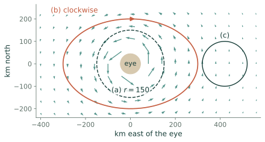
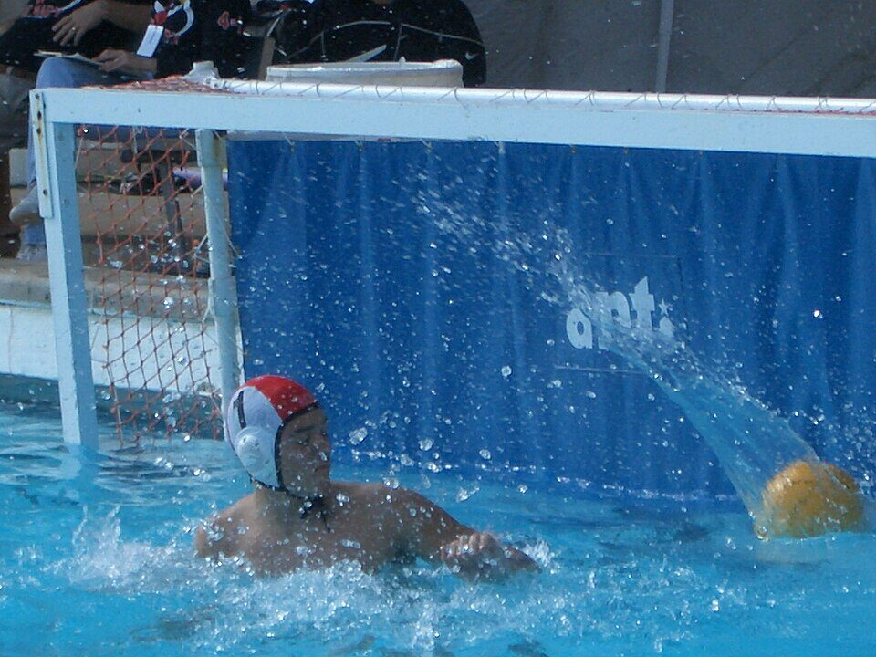

Orient boundaries positively, including boundaries of regions with holes
Verify Green’s theorem edge by edge, and use it to avoid hard line integrals
Find areas and centroids from boundary data (ellipses, polygons, planimeters)
Excise a small circle around a singularity, and decide when a circulation is zero
Review sphere symmetry for surface integrals and flux (Quiz 3)
Formulas
\(\oint_{\partial D}P\,dx+Q\,dy=\iint_D\Big(\dfrac{\partial Q}{\partial x}-\dfrac{\partial P}{\partial y}\Big)dA\), \(\partial D\) positively oriented (region on the left), \(P,Q\) continuously differentiable on an open set containing \(D\)
Area, with \(\partial D\) positively oriented: \(A=\oint_{\partial D}x\,dy=-\oint_{\partial D}y\,dx=\tfrac12\oint_{\partial D}x\,dy-y\,dx\)
Flux form, with \(\mathbf n\) the outward unit normal: \(\oint_{\partial D}\mathbf F\cdot\mathbf n\,ds=\oint_{\partial D}F_1\,dy-F_2\,dx=\iint_D\Big(\dfrac{\partial F_1}{\partial x}+\dfrac{\partial F_2}{\partial y}\Big)dA\)
Entering answers
Type numbers or formulas: fractions, decimals, pi, e, sqrt(...), sin(...), cos(...), exp(...), log(...). Use ^ for powers and radians for angles; separate vector components with commas.
Any equivalent form is accepted: 3/2, 1.5, and 6/4 are all the same answer, and so are (4/3)pi r^3 and 4 pi r^3/3.
Decimals must be correct to two decimal places (answers smaller than 0.1 need two significant digits). Exact forms such as 6pi sqrt(37) are always fine.
LaTeX such as \frac{1}{2}, \sqrt{2}, \pi, and \phi also works. A potential function may differ from ours by a constant. Units are shown beside each box.
Hints and solutions are built into the page, and nothing you type is sent anywhere: your answers and notes stay in this browser. This is an ungraded practice site.
A 1964 magazine article drew a “Bermuda Triangle” between Miami, Bermuda, and San Juan and blamed it for vanished ships and planes. NOAA finds no evidence that disappearances happen there more often than anywhere else, but the triangle still makes a good test shape. Before computers, chart-makers measured areas with a planimeter: an instrument with an arm whose tracer point you run once around a boundary while a small wheel rolls along the paper. The wheel’s roll gives the area. Mapping software today does the same job from boundary coordinates alone. How can one trip around the edge tell you the area inside, and where the region’s center is?
Building the model
1From the real world
Virginia Key (Miami) tide station: \(25.73^\circ\) N, \(80.16^\circ\) W (NOAA, rounded to two decimals)
Bermuda (St. Georges Island) tide station: \(32.37^\circ\) N, \(64.70^\circ\) W (NOAA, rounded)
San Juan (La Puntilla) tide station: \(18.46^\circ\) N, \(66.12^\circ\) W (NOAA, rounded)
Vertices of the 1964 triangle (Gaddis): Miami, San Juan, Bermuda
The chart is flat: distances east and north in km, measured at latitude \(25.5^\circ\) N and drawn at 1 cm \(=100\) km. This ignores Earth’s curvature, which you check at the end.
Each vertex is rounded to the nearest 100 km (1 cm on the chart). This keeps the arithmetic in whole numbers and moves each vertex by at most about 70 km.
The planimeter is an idealized linear one: the foot of the arm (length \(L=10\) cm) slides along a rail on the \(x\)-axis, and the wheel at the tracer rolls only by the tracer’s motion perpendicular to the arm. It works only while the tracer stays within \(L\) of the rail.
3So the model is
Chart coordinates in cm, \(x\) east and \(y\) north, Miami at the origin. Triangle \(T\): M \(=(0,0)\), S \(=(14,-8)\), B \(=(16,7)\), with area \(A\) (cm2)
The wheel roll (cm), how far the wheel turns when the tracer goes once around a loop \(C\): \(\dfrac1L\oint_C-y\,dx+\sqrt{L^2-y^2}\,dy\), where \(L=10\) cm is the arm length. The planimeter field is \((P,Q)=\big(-y/L,\ \sqrt{L^2-y^2}/L\big)\).
Calibration ellipse: \(x=6\cos t\), \(y=4\sin t\) cm, \(0\le t\le2\pi\)
The chart model (1 cm \(=100\) km): the triangle \(T\) and the idealized planimeter. The foot of the arm (length \(L\)) slides along the rail \(y=0\), and the wheel at the tracer rolls by the tracer’s motion perpendicular to the arm. The calibration ellipse is drawn at half size.
First, on paper
With your group, on paper or a shared whiteboard, work down this list before typing any answers. Items marked “Before (b)” set up that part; “After (c)” items check it.
Sketch \(T\), order M, S, B counterclockwise, and parametrize each edge for \(0\le t\le1\). Mark which edges run north (\(dy>0\)).
Before (b): Check the hypotheses of Green’s theorem for the planimeter field. Why must \(|y|<L\) hold on all of \(T\)?
Before (b): Show that the wheel roll is \(A/L\) for any traced region. What does a clockwise trace show?
Before (c): Predict the sign of \(\oint_{\partial T}x^2\,dy\) from your sketch.
After (c): Check (c) with \(\iint_T2x\,dA\), then find \(\bar x=\frac1{2A}\oint_{\partial T}x^2\,dy\) and mark the centroid.
Review: Compute \(\int x\,ds\) along the edge from M to S.
Whiteboard kit ↓One image with this problem’s figure, model, checklist, formulas, and parts (a)–(c). Paste it, or crop pieces of it, onto your group’s shared whiteboard.
aBefore tracing the triangle, an operator checks (calibrates) the planimeter on a shape whose area is known exactly. Use \(A=\tfrac12\oint x\,dy-y\,dx\) to find the area, in cm2, of the calibration ellipse \(x=6\cos t\), \(y=4\sin t\) (in cm), \(0\le t\le2\pi\), traced counterclockwise.
A step in the right direction
Each short step along the ellipse sweeps a thin wedge from the origin of area \(\tfrac12(x\,dy-y\,dx)\). Going once counterclockwise, the wedges fill the ellipse exactly once.
bUsing the planimeter model with \(L=10\) cm, find the wheel roll, in cm, when the tracer goes once counterclockwise around the triangle \(T\).
A step in the right direction
Since \(Q_x-P_y=1/L\), the roll is \(A/L\). The area \(A\) is half the parallelogram spanned by the edge vectors from M, and the whole triangle lies inside \(|y|<L\).
cWith \(\partial T\) positively oriented (counterclockwise), compute \(\oint_{\partial T}x^2\,dy\) edge by edge, in chart units, so the answer is in cm3.
A step in the right direction
Only the east edge S to B runs north (\(dy>0\)), and it is also where \(x^2\) is largest. The other two edges run south and contribute negative amounts.
View full solution +
Follow the reasoning
Orientation and area: The counterclockwise order is M \(\to\) S \(\to\) B \(\to\) M, because \((14,-8)\times(16,7)=14\cdot7+8\cdot16=226>0\). So the area of \(T\) is \(A=\tfrac12(226)=113\) cm2.
Hypotheses: Green’s theorem needs a positively oriented, piecewise-smooth simple closed boundary, and \(P,Q\) continuously differentiable on an open set containing the region. Here \(P=-y/L\) and \(Q=\sqrt{L^2-y^2}/L\). At \(|y|=L\) the derivative \(Q_y\) blows up, and beyond it \(Q\) is undefined (the arm cannot reach that far from the rail), so we need \(|y|<L\). With \(L=10\) cm and \(-8\le y\le7\) on \(T\), the hypotheses hold.
Wheel roll (b): Green’s theorem gives roll \(=\iint_T(0+\tfrac1L)\,dA=A/L=113/10=11.3\) cm, and the same argument gives \(A/L\) for any region the tracer can reach. The awkward \(\sqrt{L^2-y^2}\,dy\) term never needs integrating. On the calibration ellipse the wheel should roll \(24\pi/10\approx7.54\) cm, which is how the operator checks the instrument. Tracing clockwise reverses the boundary, so the wheel reads \(-11.3\) cm.
Edge by edge (c): \(\int_0^1(14t)^2(-8)\,dt=-\tfrac{1568}3\), then \(\int_0^1(14+2t)^2(15)\,dt=15(196+28+\tfrac43)=3380\), and \(\int_0^1(16-16t)^2(-7)\,dt=-\tfrac{1792}3\). The total is \(3380-1120=2260\) cm3. It is positive, as the sketch predicts: the only north-running edge, S to B, is also the edge farthest east, where \(x^2\) is largest.The three edge contributions to \(\oint_{\partial T}x^2\,dy\) (cm3): the north-running east edge outweighs the two south-running edges.
Double-integral check and centroid: With \(P=0\) and \(Q=x^2\), Green’s theorem gives \(\oint_{\partial T}x^2\,dy=\iint_T2x\,dA=2A\bar x\), so \(\bar x=2260/226=10\) cm. This matches the average of the vertices’ \(x\)-coordinates, \((0+14+16)/3=10\), which is the centroid of any triangle. Similarly \(\bar y=(0-8+7)/3=-\tfrac13\) cm.The centroid \((10,-\tfrac13)\) cm, where the medians meet: \(\bar x=2260/226=10\) cm agrees with the average of the vertices’ \(x\)-coordinates.
Review: On M to S, \(\mathbf c(t)=(14t,-8t)\) has speed \(\sqrt{260}\), so \(\int x\,ds=\int_0^1 14t\sqrt{260}\,dt=7\sqrt{260}\approx112.9\) cm2.
On the map: The area came out positive because the trace ran counterclockwise. \(113\) cm2 on the chart is \(1.13\) million km2. The spherical triangle through the three stations has about \(1.15\) million km2, so the flat chart and the rounded vertices together lose only about 2 percent. What matters most is the choice of vertices: later writers drew larger boundaries enclosing \(1.3\) to \(3.9\) million km2. The centroid \((10,-\tfrac13)\) cm lies about 1,000 km east of Miami and about 30 km south of it.
Final answers
a.\(24 \pi\) cm2
b.\(11.3\) cm
c.\(2260\) cm3
Discussion
The range shows that the “Triangle” has no agreed boundary: its area depends on which vertices a writer picks, so it is a story, not a measurement. Before believing a claim of danger you would need a fixed boundary, a count of incidents, and the amount of shipping and air traffic inside it, compared with other busy regions. NOAA finds no evidence that disappearances there are more frequent than elsewhere.
Think it through
Writers have given the Triangle areas from 1.3 to 3.9 million km². What does that range tell you, and what would you need before trusting a claim that the region is unusually dangerous?
Saved on this browser · Discussion prompt, not automatically graded
The Roman theatre at Orange, in southern France, still has its stone seating: a half-ring of rows wrapped around the orchestra, the semicircular floor in front of the stage. A surveyor’s software can measure a region like this using only its boundary, and you will do the same with Green’s theorem. How much seating area is there, and how far from the front of the stage does the average spectator sit?
Building the model
1From the real world
Seating diameter: \(103.63\) m (Ancient Theatre Archive)
Orchestra diameter: \(29.9\) m (same source)
Seating capacity: 5,850 or 7,300 (two published figures)
In plan view the seating is a flat, exact half-ring, with radii rounded to \(15\) m and \(52\) m, half the published diameters. Other descriptions give somewhat different diameters, so the rounding is well within the uncertainty.
The front of the stage is the line \(y=0\) through the center of the orchestra, so all the seating lies on one side of it.
Aisles and stairs are ignored, and spectators fill the seating area evenly. This overstates the area people can actually sit on.
3So the model is
\(D\): \(15\le r\le52\), \(0\le\theta\le\pi\) (meters), in polar coordinates centered on the orchestra
Seating area \(A\) (m2) \(=\tfrac12\oint_{\partial D}x\,dy-y\,dx\); first moment about the stage line \(M\) (m3) \(=-\tfrac12\oint_{\partial D}y^2\,dx\); average distance from the stage line \(\bar y=M/A\) (m)
Plan view of the model seating \(D\) (\(15\le r\le52\) m, \(0\le\theta\le\pi\)), with the front of the stage along \(y=0\) and the orchestra inside the inner arc.
First, on paper
With your group, on paper or a shared whiteboard, work down this list before typing any answers. Items marked “Before (b)” set up that part; “After (c)” items check it.
Sketch \(D\), mark its four boundary pieces, and orient each so \(D\) is on the left. Why does the inner arc run clockwise?
Mark the sign of \(-\tfrac12y^2\,dx\) on each piece. Why do the straight pieces add nothing?
Before (a): Use Green’s theorem to turn the area and first-moment integrals into double integrals in polar coordinates.
Before (c): Predict: is \(\bar y\) more or less than the middle radius, \(33.5\) m? Why?
After (c): Check the outer-arc piece directly with a parametrization.
Find \(\bar y=M/A\), and estimate the capacity at \(0.5\) m2 per spectator.
Whiteboard kit ↓One image with this problem’s figure, model, checklist, formulas, and parts (a)–(c). Paste it, or crop pieces of it, onto your group’s shared whiteboard.
aFind the seating area \(A\) of the model region \(D\), in m2.
A step in the right direction
In polar coordinates \(D\) is \(15\le r\le52\), \(0\le\theta\le\pi\), and a small piece has area \(dA=r\,dr\,d\theta\).
bWith \(\partial D\) positively oriented (so \(D\) stays on your left), find the inner arc’s contribution to \(-\tfrac12\oint_{\partial D}y^2\,dx\), in m3.
A step in the right direction
Keeping \(D\) on the left makes the inner arc run clockwise, from \((-15,0)\) to \((15,0)\): use \(x=15\cos t\), \(y=15\sin t\) with \(t\) running from \(\pi\) down to \(0\).
cFind the first moment of the seating about the stage line (area weighted by distance from that line), \(M=-\tfrac12\oint_{\partial D}y^2\,dx=\iint_D y\,dA\), in m3.
A step in the right direction
The first moment weights each small piece \(dA\) by its distance \(y=r\sin\theta\) from the stage line, so \(M=\iint_D y\,dA\) separates into a \(\theta\) integral and an \(r\) integral.
View full solution +
Follow the reasoning
Orientation: \(D\) is \(15\le r\le52\), \(0\le\theta\le\pi\). Its positive boundary is the segment from \((15,0)\) to \((52,0)\), the outer arc counterclockwise to \((-52,0)\), the segment to \((-15,0)\), and the inner arc clockwise back to \((15,0)\). Along the inner arc the region lies outside the small circle, so keeping it on the left means going clockwise.
Area (a): By Green’s theorem, \(A=\iint_D1\,dA=\int_0^\pi\!\int_{15}^{52}r\,dr\,d\theta=\tfrac\pi2(52^2-15^2)=1239.5\pi\approx3894.0\) m2.
Boundary pieces (b): On the two segments \(y=0\), so \(y^2\,dx=0\). On the outer arc, \(x=52\cos t\), \(y=52\sin t\), \(0\le t\le\pi\), which gives \(-\tfrac12\int_0^\pi52^2\sin^2t\,(-52\sin t)\,dt=\tfrac{52^3}2\cdot\tfrac43=\tfrac23(52^3)\). The inner arc is the same computation with radius \(15\) and \(t\) running from \(\pi\) to \(0\), so its piece is \(-\tfrac23(15^3)=-2250\) m3. The signs fit the sketch: the outer arc runs toward negative \(x\) (\(dx<0\)) and adds, while the inner arc runs toward positive \(x\) (\(dx>0\)) and subtracts.The pieces of \(-\tfrac12\oint_{\partial D}y^2\,dx\) (m3): the straight pieces add nothing, the outer arc adds, and the clockwise inner arc subtracts.
First moment (c): By Green’s theorem, \(M=\iint_D y\,dA=\int_0^\pi\sin\theta\,d\theta\int_{15}^{52}r^2\,dr=\tfrac23(52^3-15^3)\approx91{,}488.7\) m3, which matches the sum of the two arcs. So \(\bar y=M/A\approx23.5\) m, less than the middle radius \(33.5\) m: a seat at radius \(r\) sits only \(r\sin\theta\) from the stage line, and seats near the two ends of the half-ring are almost on that line.The average distance from the stage line, \(\bar y\approx23.5\) m, is less than the middle radius \(33.5\) m because seats near the ends of the half-ring sit close to \(y=0\).
In the theatre: \(M\) is positive because all the seating lies on the side \(y>0\), and \(\bar y\approx23.5\) m lies between the inner and outer radii, as it must. So the average spectator sits about \(23.5\) m back from the front of the stage. At \(0.5\) m2 per person the model seats \(3894/0.5\approx7800\) spectators, above both published capacities, 5,850 and 7,300. The assumption that matters most is the evenly filled half-ring: aisles and stairs, ignored in the model, take up part of the plan area.
Final answers
a.\(1239.5 \pi\) m2
b.\(-2250\) m3
c.\(\frac{274466}{3}\) m3
Discussion
Less, and no. The plan-view area is a projection, so the stepped stone surface (seat tops plus risers) is larger. \(\bar y\) is only the average horizontal distance from the stage line; the distance to the actors also includes each seat’s sideways offset and the height of the upper rows.
Think it through
Real Roman seating rises in stone steps away from the stage. Is the plan-view area you found more or less than the actual stone seat surface, and is \(\bar y\) the same as the average distance from a seat to the actors?
Saved on this browser · Discussion prompt, not automatically graded
Typhoon Haiyan struck the central Philippines in November 2013. At its peak, the Japan Meteorological Agency reported 10-minute average winds of 65 m/s and storm-force winds out to 150 km from the center. A simple model treats the wind outside the eye as an ideal vortex: the air circles the eye, and its speed falls like \(1/r\) with distance \(r\) from the center. The circulation around a closed loop measures how much spin the wind carries around it: it adds up the part of the wind that blows along the loop. How much circulation does the storm carry around a loop that encloses the eye, would a lopsided loop give a different answer, and what about a loop that misses the eye?
Building the model
1From the real world
Maximum 10-minute wind: \(65\) m/s (JMA best track)
Central pressure: \(895\) hPa
Storm-force winds (\(\ge25\) m/s \(=90\) km/h) out to \(150\) km from the center
Gale winds (\(\ge15\) m/s) out to \(460\) km north and \(330\) km south of the center
Outside the eye, the wind is an ideal counterclockwise vortex, calibrated so that its speed is \(90\) km/h at \(r=150\) km. How well \(1/r\) fits farther out is checked against the gale radius.
The model does not apply in the eye, because the speed \(\Gamma/(2\pi r)\) grows without limit as \(r\to0\); the field is undefined at the center.
The map is flat, in km, with the eye at the origin, and the wind is a snapshot that stays fixed while each loop is traced.
3So the model is
\(\mathbf v(x,y)=\dfrac{\Gamma}{2\pi}\,\dfrac{(-y,\ x)}{x^2+y^2}\) km/h for \((x,y)\ne(0,0)\), with speed \(\Gamma/(2\pi r)\) at distance \(r\) km from the eye
\(\Gamma\) (km2/h): the vortex strength, a constant fixed by the \(90\) km/h wind at \(150\) km
Loops: the circle \(r=150\); the ellipse \(x^2/300^2+y^2/200^2=1\); the circle of radius \(100\) about \((420,0)\)

The ideal-vortex model outside the eye (arrows) and the three loops: (a) the circle \(r=150\), (b) the ellipse, traversed clockwise, and (c) the circle of radius \(100\) about \((420,0)\), which does not enclose the eye. Map in km.
First, on paper
With your group, on paper or a shared whiteboard, work down this list before typing any answers. Items marked “Before (b)” set up that part; “After (c)” items check it.
Sketch the wind and the three loops, mark where \(\mathbf v\) is undefined, and compute \(Q_x-P_y\) for \(r>0\).
Before (a): Explain why Green’s theorem on the disk \(r\le150\) km would wrongly predict zero.
Before (b): Predict: is the ellipse’s circulation larger in size than the circle’s, smaller, or equal?
Before (b): Excise a small circle \(C_\varepsilon\) about the center, orient the boundary of the region between it and the ellipse positively, and conclude without parametrizing.
After (c): Explain part (c) with Green’s theorem.
Check the model: its speed at the gale radius, \(460\) km, and where it reaches \(65\) m/s. What do these say about \(1/r\)?
Whiteboard kit ↓One image with this problem’s figure, model, checklist, formulas, and parts (a)–(c). Paste it, or crop pieces of it, onto your group’s shared whiteboard.
aFind the circulation of the wind counterclockwise (seen from above) around the circle \(r=150\) km centered on the eye, in km2/h.
A step in the right direction
On this circle the wind is tangent and has the same speed, \(90\) km/h, everywhere, so \(\mathbf v\cdot d\mathbf r=90\,ds\) on every piece of the loop.
bFind the circulation of the wind around the ellipse \(x^2/300^2+y^2/200^2=1\), traversed clockwise (seen from above), in km2/h.
A step in the right direction
The region \(R_\varepsilon\) between the ellipse and a small circle \(C_\varepsilon\) avoids the eye and has \(Q_x-P_y=0\). Its positive boundary is the ellipse counterclockwise plus \(C_\varepsilon\) clockwise.
cFind the circulation of the wind counterclockwise around the circle of radius \(100\) km centered at \((420,0)\) km, in km2/h.
A step in the right direction
The disk bounded by the loop in (c) stays \(320\) km away from the eye, so \(\mathbf v\) is smooth on the whole disk and Green’s theorem applies.
View full solution +
Follow the reasoning
Curl and hypotheses: For \(r>0\), with \(P=-\tfrac{\Gamma}{2\pi}\tfrac{y}{x^2+y^2}\) and \(Q=\tfrac{\Gamma}{2\pi}\tfrac{x}{x^2+y^2}\), both \(Q_x\) and \(P_y\) equal \(\tfrac{\Gamma}{2\pi}\tfrac{y^2-x^2}{(x^2+y^2)^2}\), so \(Q_x-P_y=0\). But the field is undefined at the center, which lies in every disk around the eye. So Green’s theorem does not apply on the disk \(r\le150\), and its prediction of zero is wrong.
Circle (a): On \(r=150\) the wind is tangent with speed \(\Gamma/(2\pi\cdot150)=90\) km/h, so the circulation is \(\Gamma=2\pi(150)(90)=27000\pi\approx84{,}823\) km2/h. The same computation gives \(\Gamma\) on every circle centered on the eye.On circles centered on the eye the speed falls like \(1/r\) while the loop length grows like \(r\), so every such circle has circulation \(\Gamma=27000\pi\approx84{,}823\) km2/h.
Excised region (b): Let \(R_\varepsilon\) be the region between the ellipse and \(C_\varepsilon\), with \(\varepsilon<200\). Its positive boundary is the ellipse counterclockwise plus \(C_\varepsilon\) clockwise. The field is smooth on \(R_\varepsilon\) with zero curl, so Green’s theorem gives \(\oint_{\text{ellipse, ccw}}=\oint_{C_\varepsilon,\text{ccw}}=\Gamma\). Clockwise, the circulation is \(-27000\pi\approx-84{,}823\) km2/h. So the larger, lopsided loop has a circulation of the same size as the circle: the extra area between them has zero curl and adds nothing.
Loop that misses the eye (c): The disk \((x-420)^2+y^2\le100^2\) does not contain the center, so Green’s theorem applies and gives \(\iint0\,dA=0\).
Model check: At \(460\) km the model gives \(90\cdot150/460\approx29\) km/h \(\approx8\) m/s, but JMA reported gale winds (\(\ge15\) m/s) that far north, so the real winds fall off more slowly than \(1/r\). The model reaches \(65\) m/s at \(r=150\cdot25/65\approx58\) km, and closer in it predicts ever faster winds without limit. The ideal vortex is only a rough description of the winds outside the core. The circulation is positive counterclockwise because the model wind turns counterclockwise, and its size, near \(85{,}000\) km2/h, is pinned only by the 150 km calibration. The assumption that matters most is the \(1/r\) falloff: it is what makes every loop around the eye give the same answer.Model check: the \(1/r\) wind fits the calibration at \(150\) km but is too weak at the \(460\) km gale radius and reaches the reported \(65\) m/s peak at only \(58\) km.
Final answers
a.\(27000 \pi\) km2/h
b.\(- 27000 \pi\) km2/h
c.\(0\) km2/h
Discussion
No, and no. Around a circle of radius \(r\) centered on the eye the circulation would be \(2\pi r\,v(r)\), which now grows like \(\sqrt r\), so bigger loops carry more. Equivalently, for a wind of speed \(v(r)\) circling the center, \(Q_x-P_y=\frac1r\frac{d}{dr}\big(r\,v\big)\), which is zero for \(v\propto1/r\) but positive everywhere outside the eye for \(v\propto1/\sqrt r\). So by Green’s theorem the ellipse, which encloses the circle plus a band of positive curl, has a circulation of larger size, and the loop in (c) encloses positive curl and has positive circulation.
Think it through
The model check shows that the real winds fall off more slowly than \(1/r\). What if the speed fell off like \(1/\sqrt r\) instead: would the circle in (a) and the ellipse in (b) still have circulations of the same size, and would the loop in (c) still give zero?
Saved on this browser · Discussion prompt, not automatically graded
Problem 04Core
Glass floats that hold up moorings in the East Australian Current

Photo: NASA Earth Observatory (Aqua MODIS) · Public domain · Wikimedia Commons
Off Brisbane, the East Australian Current carries warm water south along the coast. Until 2023, Australia’s Integrated Marine Observing System kept a line of moorings across it, from the continental slope out to the abyssal waters. A mooring is a cable anchored to the seafloor and lined with instruments such as thermometers and current meters. What keeps a 4 km cable standing upright in a strong current? Clusters of hollow glass floats near the top, each a sphere 17 inches across. How hard does the water push up on one float, how much does a whole cluster lift, and how hard would one float be to spin about the rope? (This problem reviews Weeks 7 and 8 for Quiz 3.)
Building the model
1From the real world
EAC array (IMOS): six moorings across the current off Brisbane; the array ceased in 2023
2015 deployment drawings: water depths from \(500\) m (M1) to \(4800\) m (M6)
Mooring M4: design depth \(4259\) m, with a cluster of \(16\) glass floats, 17-inch, near the top
17-inch glass float (VITROVEX FS-6700-17, a representative model): outer diameter \(432\) mm
Float weight in air: \(17\) kg
Float net buoyancy: \(26\) kg, for seawater of \(1.025\) g/cm3
Each float’s outer surface is a sphere of radius \(R=21.6\) cm \(=2.16\) dm, half the published diameter.
For spinning, the float’s \(17\) kg of glass is a thin uniform shell. The published wall thickness, \(14\) mm, is small next to \(R\).
Seawater density is \(1.025\) kg/L, the value the datasheet uses.
The floats are fully submerged and still; protective casings, clamps, and rope are ignored, so only the bare glass sphere counts.
3So the model is
\(S\): \(x^2+y^2+z^2=R^2\), \(R=2.16\) dm, with \(z\) measured upward along the rope from the float’s center
The up-thrust, the water’s upward push on a float: \(\rho g\iint_S(0,0,z)\cdot\mathbf n\,dS\), with \(\mathbf n\) the outward unit normal (away from the center), seawater density \(\rho=1.025\) kg/L, and \(g\) the acceleration due to gravity
Spin about the rope (\(z\)-axis): the moment of inertia \(I=\dfrac{m}{4\pi R^2}\iint_S(x^2+y^2)\,dS\) (kg·m2, with lengths in m), with glass mass \(m=17\) kg
One float as a sphere \(S\) of radius \(R=21.6\) cm on the mooring rope (the \(z\)-axis), fully submerged, with outward normals \(\mathbf n\).
First, on paper
With your group, on paper or a shared whiteboard, work down this list before typing any answers. Items marked “Before (b)” set up that part; “After (c)” items check it.
Sketch \(S\) on the rope with outward normals \(\mathbf n\), and mark where \(z\) and \(n_z\) are positive. Why is \(\iint_S z\,dS=0\) but \(\iint_S z\,n_z\,dS>0\)?
Before (a): Explain, without parametrizing, why \(\iint_Sx^2\,dS=\iint_Sy^2\,dS=\iint_Sz^2\,dS\); then use \(x^2+y^2+z^2=R^2\) to evaluate them.
Before (b): Find the outward unit normal \(\mathbf n\) on \(S\). Why must it point outward here?
Predict: is a thin shell harder or easier to spin than a solid ball of the same mass and size? Then find \(I\) and compare with \(\tfrac25mR^2\).
After (c): Compare your lift per float with the datasheet’s \(26\) kg net buoyancy.
Whiteboard kit ↓One image with this problem’s figure, model, checklist, formulas, and parts (a)–(c). Paste it, or crop pieces of it, onto your group’s shared whiteboard.
aFor a sphere of radius \(r\) centered at the origin, enter \(\iint_S x^2\,dS\) as a function of \(r\).
A step in the right direction
Relabeling the axes maps the sphere to itself, so the three integrals are equal, and together they make \(\iint_S r^2\,dS\) over a sphere of area \(4\pi r^2\).
bFind the outward flux \(\iint_S(0,0,z)\cdot\mathbf n\,dS\) through one float’s outer surface, with \(\mathbf n\) pointing away from the float’s center and \(R=2.16\) dm. Measure lengths in decimeters, so the answer is in liters.
A step in the right direction
On top, \((0,0,z)\) and \(\mathbf n\) both point up; underneath, both point down. So \((0,0,z)\cdot\mathbf n=z^2/R\ge0\) everywhere on \(S\), with \(\mathbf n=(x,y,z)/R\).
cThe water’s up-thrust on each float is \(\rho g\) times the flux from part (b). Find the net upward lift of the 16-float cluster on mooring M4 (total up-thrust minus total weight), in kilograms, that is, divided by \(g\).
A step in the right direction
Per float, the net lift in kilograms is \(\rho\) times the volume from (b) minus the \(17\) kg of glass; the cluster on M4 has \(16\) floats.
View full solution +
Follow the reasoning
Sign check: \(\iint_S z\,dS=0\) because the top and bottom hemispheres cancel. In \(z\,n_z=z^2/R\) both factors change sign together, so every part of the sphere contributes a positive amount.
Symmetry (a): Rotating the axes (\(x\) to \(y\) to \(z\)) maps the sphere and its area element to themselves, so the three integrals are equal. Their sum is \(\iint_S R^2\,dS=R^2(4\pi R^2)\), so each is \(\tfrac43\pi R^4\).
Flux (b): The outward normal is \(\mathbf n=(x,y,z)/R\), so \((0,0,z)\cdot\mathbf n=z^2/R\), and the flux is \(\tfrac1R\cdot\tfrac43\pi R^4=\tfrac43\pi R^3\), the sphere’s volume. With \(R=2.16\) dm it is about \(42.21\) L. An inward normal would flip the sign; the water pushes inward on the outer surface, and the up-thrust formula is written with the outward normal.
Spin: \(I=\frac{m}{4\pi R^2}\iint_S(x^2+y^2)\,dS=\frac{m}{4\pi R^2}\cdot\frac83\pi R^4=\tfrac23mR^2\approx\tfrac23(17)(0.216)^2\approx0.53\) kg·m2. This is larger than \(\tfrac25mR^2\approx0.32\) kg·m2 for a solid ball, so the shell is harder to spin, because it keeps all its mass at the full radius. The real glass is \(14\) mm thick, so its true \(I\) is slightly below the thin-shell value.Same mass, same radius: the thin shell keeps all its glass at radius \(R\), so it is harder to spin than a solid ball.
Net lift (c): One float displaces \(1.025(42.21)\approx43.27\) kg of seawater and weighs \(17\) kg, so it lifts about \(26.27\) kg. The cluster of 16 lifts about \(16(26.27)\approx420.3\) kg, an upward pull of about \(4.12\) kN on the top of the mooring.Per float: displaced seawater minus glass gives the net lift, which matches the datasheet’s \(26\) kg; the cluster of \(16\) lifts about \(420\) kg.
Reconciliation: The lift is positive, as it must be for floats, and each float’s \(26.27\) kg agrees with the datasheet’s rounded \(26\) kg. The radius matters most, because it enters cubed: a \(1\) percent error in \(R\) changes the displaced water by about \(3\) percent, or about \(1.3\) kg, which is about \(5\) percent of each float’s lift.
Final answers
a.\(\frac{4 \pi r^{4}}{3}\)
b.\(13.436928 \pi\) L
c.\(-272 + 220.3656192 \pi\) kg
Discussion
Yes. For any closed surface the up-thrust is \(\rho g\iint_S(0,0,z)\cdot\mathbf n\,dS\), which equals ρg times the enclosed volume (a fact the divergence theorem will explain), so a float of any shape lifts ρV minus its mass. For a sphere, symmetry gives that flux without the general theorem, because x², y², and z² have equal integrals over the sphere.
Think it through
The lift of one float is ρ times its volume minus its mass. Would the same flux argument give the up-thrust on a cylindrical or cube-shaped float, and why does the sphere’s symmetry make the computation so quick?
Saved on this browser · Discussion prompt, not automatically graded
Problem 05Extension
Agulhas rings: the loop with the most spin
Off the southern tip of Africa, the Agulhas Current loops back on itself and pinches off rings of warm water, about six a year. Each ring is 200 to 280 km across. The rings drift into the Atlantic, carrying Indian Ocean heat and salt. Inside a ring the water swirls around the center, and toward the ring’s edge the swirl dies away. The circulation around a closed loop measures how much spin the water carries around it: it adds up how much the water flows along the loop. Which loop inside a ring captures the most circulation, and what is the circulation around the ring’s edge?
Building the model
1From the real world
Rings shed per year: about six (CFOO Sea Atlas)
Ring diameter: \(200\) to \(280\) km
Depth reached: about \(1100\) m
Sense of rotation: anticyclonic (counterclockwise in the Southern Hemisphere)
The surface swirl speed at distance \(r\) km from the center is \(v(r)=V_0\dfrac ra\Big(1-\dfrac{r^2}{2a^2}\Big)\), with core radius \(a=90\) km and speed scale \(V_0=6.6\) km/h (peak about \(1\) m/s). The profile is chosen to match the published size, not fitted to measured speeds.
The ring ends where the swirl stops, at \(r=a\sqrt2\approx127\) km, a diameter of about \(255\) km, inside the published range.
Only the surface flow is modeled, on a flat map; the ring’s depth and its slow drift are ignored.
3So the model is
\(\mathbf u(x,y)=\dfrac{6.6}{90}\Big(1-\dfrac{x^2+y^2}{16200}\Big)(-y,\ x)\) km/h, for \(x^2+y^2\le16200\), with \(x,y\) in km from the ring’s center
Here \(6.6/90=V_0/a\) per hour and \(16200=2a^2\) km2, so \(\mathbf u\) has speed \(v(r)\) and turns counterclockwise.
Model swirl speed \(v(r)\) across the ring. It peaks at about \(1\) m/s and falls to zero at the ring edge, \(r=90\sqrt2\approx127\) km.
First, on paper
With your group, on paper or a shared whiteboard, work down this list before typing any answers. Items marked “Before (b)” set up that part; “After (c)” items check it.
Sketch the ring from above, with arrows sized by the graph. Predict: does \(Q_x-P_y\) change sign at the speed peak?
Before (b): Explain why the best positively oriented loop \(C\) bounds the region \(D\) with the largest \(\iint_D(Q_x-P_y)\,dA\).
Before (b): Prove that the disk where \(Q_x-P_y>0\) wins: compare any \(D\) with its part inside that disk.
After (b): Check part (b) directly on that disk’s boundary circle.
Compute the outward flux \(\oint\mathbf u\cdot\mathbf n\,ds\) across that circle with \(\mathbf n\,ds=(dy,-dx)\); compare with \(\iint\operatorname{div}\mathbf u\,dA\).
Whiteboard kit ↓One image with this problem’s figure, model, checklist, formulas, and parts (a)–(c). Paste it, or crop pieces of it, onto your group’s shared whiteboard.
aWriting \(\mathbf u=(P,Q)\), enter \(Q_x-P_y\) (in units of 1/h) as a function of \(r\) in km.
A step in the right direction
Write \(\mathbf u=g(r)\,(-y,x)\), with \(g\) from the model. The product rule gives a term \(2g\) and a term with the slope \(g^{\prime}(r)\) shown here.
bUsing part (a), find the largest possible circulation of \(\mathbf u\) around a positively oriented (counterclockwise) simple closed loop inside the ring, in km2/h.
A step in the right direction
Circulation \(=\iint_D(Q_x-P_y)\,dA\). A loop inside the core misses some of the positive part; a loop reaching into the outer band picks up negative part.
cFind the circulation of \(\mathbf u\) counterclockwise around the ring’s edge, the circle \(r=90\sqrt2\) km, in km2/h.
A step in the right direction
The edge loop \(r=90\sqrt2\) km encloses the whole core and the whole outer band. Look at the swirl speed there, or compare the two parts.
View full solution +
Follow the reasoning
Curl (a): With \(g(r)=\frac{V_0}{a}\big(1-\frac{r^2}{2a^2}\big)\) and \(\mathbf u=g(-y,x)\), \(Q_x-P_y=2g+rg^{\prime}=\frac{2V_0}{a}\big(1-\frac{r^2}{a^2}\big)=\frac{2(6.6)}{90}\big(1-\frac{r^2}{8100}\big)\) per hour. It is positive in the core and negative outside \(r=a=90\) km. So the sign changes at \(r=a\), not at the speed peak, \(r=a\sqrt{2/3}\approx73\) km: just past the peak the speed falls, but \(r\,v\) still grows, and \(Q_x-P_y=\frac1r\frac{d}{dr}(r\,v)\).The speed peaks at \(r=a\sqrt{2/3}\approx73\) km, but \(Q_x-P_y\) changes sign later, at \(r=a=90\) km, because \(r\,v\) keeps growing until then.
Best loop (b): By Green’s theorem, the circulation around \(C\) equals \(\iint_D(Q_x-P_y)\,dA\) over the region \(D\) it encloses, so the best loop bounds the best region. For any \(D\), \(\iint_D(Q_x-P_y)\le\iint_{D\cap\{r\le a\}}(Q_x-P_y)\le\iint_{r\le a}(Q_x-P_y)\), because the dropped outer part is negative and the added inner part is positive. The maximum is \(2\pi\int_0^{90}\frac{13.2}{90}\big(1-\frac{r^2}{8100}\big)r\,dr=\pi(6.6)(90)=594\pi\approx1866\) km2/h. Check: at \(r=90\) the speed is \(3.3\) km/h, and \(2\pi(90)(3.3)=594\pi\).Circulation around centered circles: the best loop is \(r=90\) km, with \(594\pi\approx1866\) km2/h, and the edge circle gives \(0\), as in part (c).
Flux form: On \(r=a\), \(\mathbf u\) is tangent to the circle, so \(\mathbf u\cdot\mathbf n=0\) and the outward flux is \(0\). Also \(\operatorname{div}\mathbf u=0\), so both sides of the flux form of Green’s theorem agree.
Ring edge (c): At \(r=90\sqrt2\), \(1-r^2/(2a^2)=0\), so the swirl speed is \(0\) and so is the circulation. The negative \(Q_x-P_y\) of the outer band exactly cancels the positive core, so seen from outside, the ring carries no net spin.
In the ocean: The positive circulation in the core means counterclockwise swirl, which is anticyclonic in the Southern Hemisphere, as published. The model edge at \(r\approx127\) km gives a diameter of about \(255\) km, inside the published \(200\) to \(280\) km. The zero in (c) comes entirely from the assumed swirl profile, which stops exactly at the edge; the published facts check the size and the sense of rotation, not the profile.
Circulation measures the net spin (vorticity) inside the loop: the core spins one way, a surrounding band spins the other way, and the two cancel at the edge. Because the swirl stops at the edge, the ring barely disturbs the water around it, so it is a self-contained (“shielded”) vortex that can drift far without spreading its spin to the surrounding ocean.
Think it through
A ring full of spinning water has zero circulation around its edge. How is that possible, and why might a ring like this hold together while it drifts across an ocean?
Saved on this browser · Discussion prompt, not automatically graded
Field notes
Where the numbers come from
Each card lists the published values this week’s problems use, with a link to the original source and a CSV download. Everything else in a problem is a labeled assumption.
Published station coordinates
NOAA CO-OPS tide station metadata
NOAA Center for Operational Oceanographic Products and Services metadata API, accessed November 17, 2026: stations 8723214, 2695540, and 9755371 (replace the station number in the link). The stations stand in for the three cities; a flat chart and rounded vertices are modeling choices.
NOAA National Ocean Service. The vertices Miami, San Juan, and Bermuda come from Vincent Gaddis’s 1964 Argosy article, as summarized in Wikipedia’s article on the Bermuda Triangle (a secondary source), which notes that later writers used other boundaries enclosing 1.3 to 3.9 million km².
Item
Published statement
Location
A region in the western part of the North Atlantic Ocean
Official status
The U.S. Board on Geographic Names keeps no official file on the area
Disappearances
No evidence that they occur there with any greater frequency than elsewhere
The Ancient Theatre Archive: Theatre at Orange (Arausio)
Thomas G. Hines, Department of Theatre, Whitman College (2009). The page gives no measurement method; other descriptions give a cavea about 104 m across and an orchestra about 27 m across. The half-ring shape is a model.
Japan Meteorological Agency. Winds are 10-minute averages. JMA defines the storm-force wind area as winds of 25 m/s or more and the gale area as 15 m/s or more (jma.go.jp/jma/kishou/know/typhoon/1-3.html). Agencies that use 1-minute averages reported higher peak winds.
IMOS Deep Water Arrays: the East Australian Current (EAC) array
Integrated Marine Observing System (Australia), accessed November 18, 2026. Water depths and float clusters come from the IMOS 2015 deployment drawings, data.aodn.org.au/IMOS/DWM/Deployments/Schematic_EAC_array.pdf (drawing titles and the M4 sheet).
Item
Published value
Moorings in the EAC array
6, from the continental slope to the abyssal waters off Brisbane
Nautilus Marine Service GmbH, overview page and datasheet (last update 03/2020); the datasheet states that its figures are based on seawater of 1.025 g/cm³. The IMOS drawings say only “glass floats 17-inch” without naming a maker, so this model stands in as a representative 17-inch deep-sea sphere.
Centre for in situ Observational Oceanography (South Africa), Sea Atlas education pages, citing Pichevin, Nof and Lutjeharms (1999) for the drift speed. The swirl profile in the problem is a model.